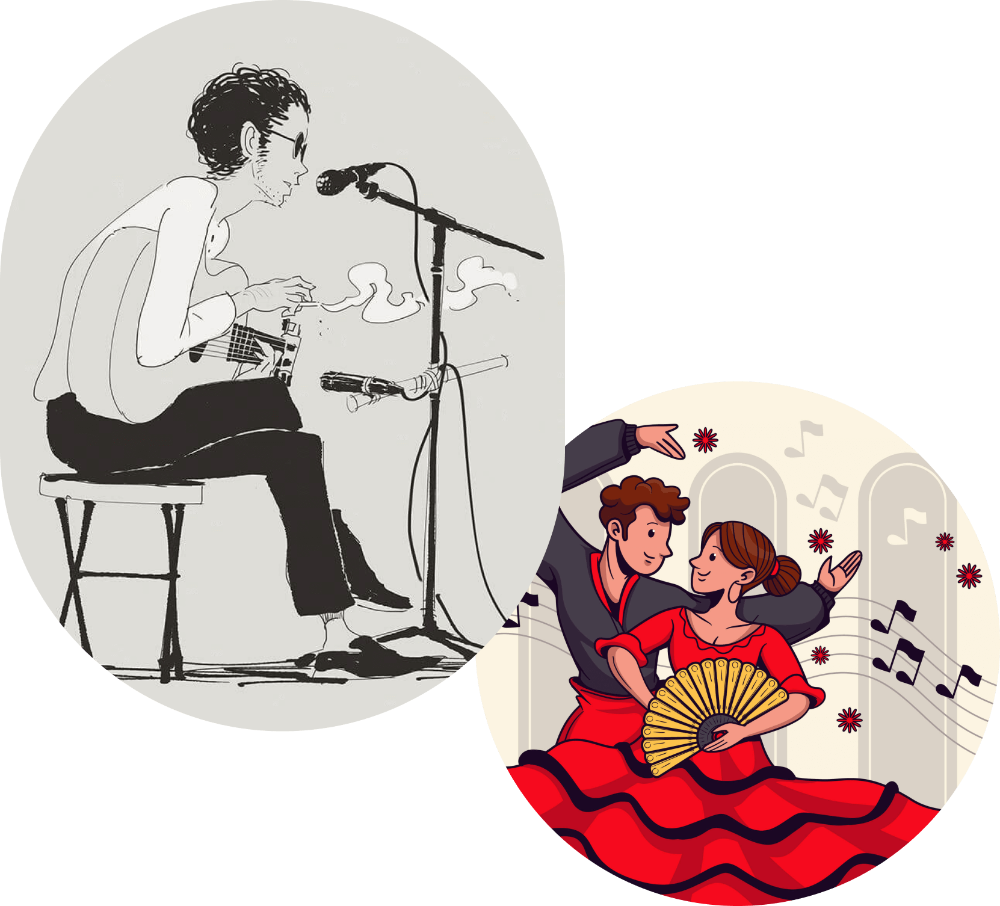

Canto
Según la Real Academia Española, el término "cante" se refiere a la "acción o resultado de entonar cualquier canto andaluz". Define el "cante flamenco" como "el canto andaluz enérgico" y el cante jondo como "la expresión más auténtica del canto andaluz, imbuida de un profundo sentimiento". El intérprete del cante flamenco es llamado "cantaor" en lugar de "cantante", evidenciando la pérdida de la intervocálica característica del dialecto andaluz.